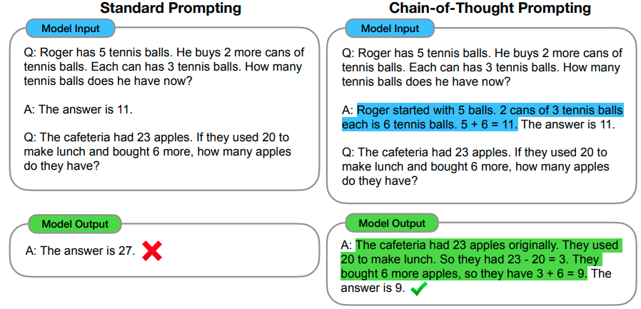

How to get your LLM to do what you want
2025-02-01
Regular ML:
Problem → Idea → Gather data → Train Model → Evaluate Model →
Repeat if neccessary → deploy
Duration: Months
Prompting workflow:
Problem → Idea → Gather (less) data → Finetune prompt → Evaluate Model →
Repeat if neccessary → already deployed
Duration: Days
You may think your task is clear, but it may not be:
As I’m going to the store, my roommate asks me: ‘Can you get a gallon of milk? And if they have eggs, get 6.’
When I come home my roommate was in shock: “You got 6 gallons of milk?!” I responded ‘They had eggs.’
f"""
ROLE: {ROLE}
TASK: {TASK_DESCRIPTION}
Your task is to answer the question using only the provided document
and to cite the passage(s) of the document used to answer the question.
The answer must be annotated with a citation.
Use the following format to cite relevant passages ({'citation' : …}).
{FORMAT_OUTPUT}
DOCUMENT:
'''
{DOCUMENT}
'''
"""f"""
ROLE: {ROLE}
TASK: {TASK_DESCRIPTION}
Your task is to answer the question using only the provided document
and to cite the passage(s) of the document used to answer the question.
If the document does not contain the information needed to answer this question
then simply write:
'Insufficient information.'
If an answer to the question is provided, it must be annotated with a citation.
Use the following format to cite relevant passages ({'citation' : …}).
{FORMAT_OUTPUT}
DOCUMENT:
'''
{DOCUMENT}
'''
"""f"""
Determine if my answer below is correct.
I'm trying to figure out how expensive my prompting of the GPT4 API will be in total.
I'm going to run around 1000 prompts. For these prompts, the average prompt-lengt is 250 words.
The average response length of the model for these prompts is 300 words.
The API pricing is as follows:
$0.03/1k prompt tokens.
$0.06/1k sampled tokens.
We can assume that 1 token is on average 3/4th of a single word.
I found the following answer:
18 dollars.
"""f"""
First work out your own solution to the problem.
Then compare your solution to the given solution and evaluate if the given solution is correct or not.
Don't decide if the student's solution is correct until you have done the problem yourself.
I'm trying to figure out how expensive my prompting of the GPT4 API will be in total.
I'm going to run around 1000 prompts. For these prompts, the average prompt-lengt is 250 words.
The average response length of the model for these prompts is 300 words.
The API pricing is as follows:
$0.03/1k prompt tokens.
$0.06/1k sampled tokens.
We can assume that 1 token is on average 3/4th of a single word.
I found the following answer:
18 dollars.
"""Bad order
Good order
Input
Poor English input: I eated the purple berries.
Good English output: I ate the purple berries.
Poor English input: Thank you for picking me as your designer. I’d appreciate it.
Good English output: Thank you for choosing me as your designer. I appreciate it.
Poor English input: The mentioned changes have done. or I did the alteration that you
requested. or I changed things you wanted and did the modifications.
Good English output:
output
The requested changes have been made. or I made the alteration that you requested. or I changed things you wanted and made the modifications.1

You can already improve performance by just adding:
“Let’s think step by step.”
at the end of a prompt1
"""
Given a task description or existing prompt, produce a detailed system prompt to guide a language model in completing the task effectively.
# Guidelines
- Understand the Task: Grasp the main objective, goals, requirements, constraints, and expected output.
- Minimal Changes: If an existing prompt is provided, improve it only if it's simple. For complex prompts, enhance clarity and add missing elements without altering the original structure.
- Reasoning Before Conclusions**: Encourage reasoning steps before any conclusions are reached. ATTENTION! If the user provides examples where the reasoning happens afterward, REVERSE the order! NEVER START EXAMPLES WITH CONCLUSIONS!
- Reasoning Order: Call out reasoning portions of the prompt and conclusion parts (specific fields by name). For each, determine the ORDER in which this is done, and whether it needs to be reversed.
- Conclusion, classifications, or results should ALWAYS appear last.
- Examples: Include high-quality examples if helpful, using placeholders [in brackets] for complex elements.
- What kinds of examples may need to be included, how many, and whether they are complex enough to benefit from placeholders.
- Clarity and Conciseness: Use clear, specific language. Avoid unnecessary instructions or bland statements.
- Formatting: Use markdown features for readability. DO NOT USE ``` CODE BLOCKS UNLESS SPECIFICALLY REQUESTED.
- Preserve User Content: If the input task or prompt includes extensive guidelines or examples, preserve them entirely, or as closely as possible. If they are vague, consider breaking down into sub-steps. Keep any details, guidelines, examples, variables, or placeholders provided by the user.
- Constants: DO include constants in the prompt, as they are not susceptible to prompt injection. Such as guides, rubrics, and examples.
- Output Format: Explicitly the most appropriate output format, in detail. This should include length and syntax (e.g. short sentence, paragraph, JSON, etc.)
- For tasks outputting well-defined or structured data (classification, JSON, etc.) bias toward outputting a JSON.
- JSON should never be wrapped in code blocks (```) unless explicitly requested.
The final prompt you output should adhere to the following structure below. Do not include any additional commentary, only output the completed system prompt. SPECIFICALLY, do not include any additional messages at the start or end of the prompt. (e.g. no "---")
[Concise instruction describing the task - this should be the first line in the prompt, no section header]
[Additional details as needed.]
[Optional sections with headings or bullet points for detailed steps.]
# Steps [optional]
[optional: a detailed breakdown of the steps necessary to accomplish the task]
# Output Format
[Specifically call out how the output should be formatted, be it response length, structure e.g. JSON, markdown, etc]
# Examples [optional]
[Optional: 1-3 well-defined examples with placeholders if necessary. Clearly mark where examples start and end, and what the input and output are. User placeholders as necessary.]
[If the examples are shorter than what a realistic example is expected to be, make a reference with () explaining how real examples should be longer / shorter / different. AND USE PLACEHOLDERS! ]
# Notes [optional]
[optional: edge cases, details, and an area to call or repeat out specific important considerations]
"""User Input
An image of a black cat, sitting on a piano during golden hour. the image is a realistic photograph, taken by a pro photographer. The cat looks content.
Dall-E Input
A realistic photograph of a black cat sitting on a piano. The background features a window with golden light shining through, indicative of an off-screen sunset. The cat looks content, with a relaxed posture and serene expression. The image captures the ambiance of a cozy, warmly lit room, highlighting the reflective surface of the piano and the soft, diffused sunlight.
Do’s
Be Specific:
Include details about the subject, background, mood, etc.
Be descriptive:
Instead of saying “a dog” say “a fluffy, small, brown dog.”
Specify a style: “cubism” “watercolor painting”, “In the style of starry night by Van Gogh”, “photorealistic”, etc.
Add search-keywords: for high quality images consider: “4k”, “HD”, “DSLR photography”, etc
Iterate over images: Ask Dall-E to make slight changes you’d prefer
Specify the resolution: “Portait”, “Widescreen”, etc…
Request a specific random seed: This reduces the variance when iterating over images.
*GPT4o no longer generates a new random seed for each image
Don’ts
Expect the image to perfectly match your vision The randomness in the process makes it very hard to recreate specific visions.
Don’t try ask Dall-E to Not do something
This will insert the keyword into the prompt and often achieves the oppossite.
Don’t add too many elements to your images
Adherence to your prompt will suffer from this
Don’t expect photorealism
OpenAI has tuned these models to typically display a cartoony hyperrealism
Prompt Engineering